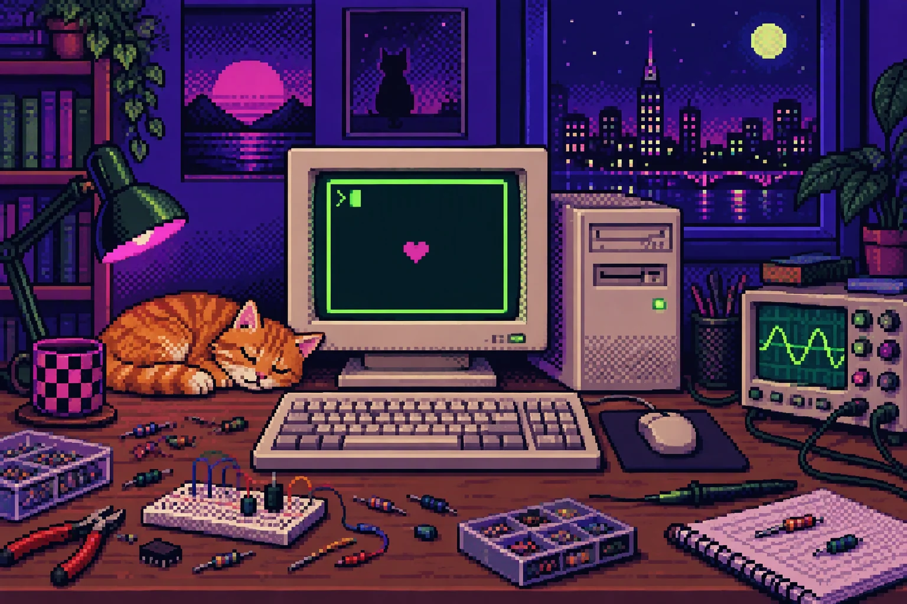

先收集，再动笔
把查到的截图、文本、链接拖进共写小电视，存进素材箱。写作时随手取用，思路不被打断。
COLLECTSYSTEM ONLINE PERSONAL LEARNING OS EST. 2026
这里记录我从电子基础、嵌入式 MCU 到硬件工程的完整学习路径。文章可以检索、画成导图，每一步都留痕。
[ OK ] index /notes — 10 notes / 4 collections
[ OK ] load /markdown — mermaid + katex + wiki-links
[ OK ] init /fx — crt scan / starfield / glitch
[ WARN ] draft waiting — 写作台还有一篇没写完
[ .. ] press ~ to open the terminal
kawaii@study:~$ write --mode daily

RESOURCE VAULT / 书、手册、课程与网盘
LOADING RESOURCES…
METHOD / 四步循环
把查到的截图、文本、链接拖进共写小电视，存进素材箱。写作时随手取用，思路不被打断。
COLLECT记录现象、参数和踩坑过程。代码会过时，现场记录不会。每篇笔记都是一个可检索的检查点。
WRITE标题与列表自动生成思维导图，折叠、缩放、导出。结构一眼可见，复习不再翻全文。
MAP每周回看栏目与标签，合并重复分类，补上真正卡住自己的部分，然后继续写下一篇。
REVIEW